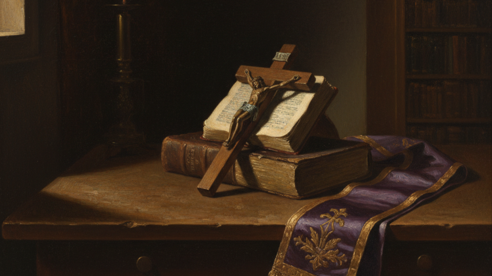
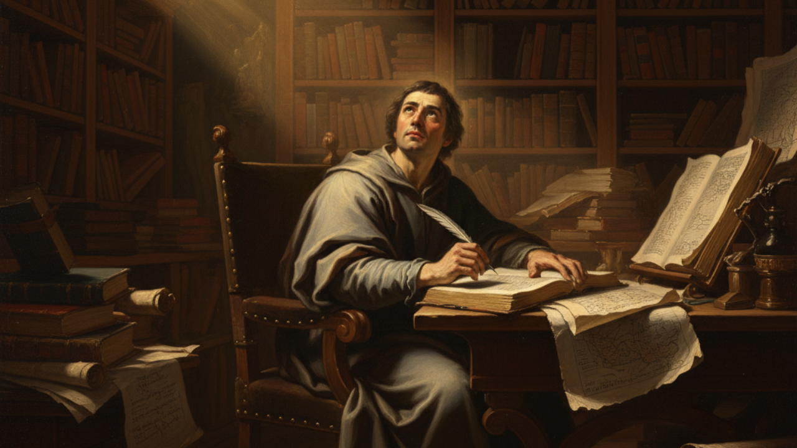
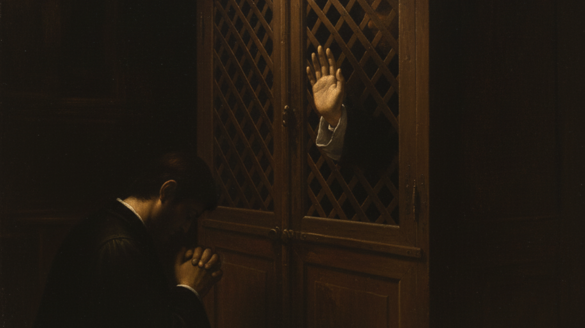

O Sacramento da Confissão
Redescubra a porta para a graça e o caminho para a santidade.

Você sente um chamado para uma vida espiritual mais profunda, mas as incertezas e as dúvidas sobre a Confissão paralisam o seu progresso? Deseja ardentemente avançar no caminho da santidade, mas não sabe como dar os próximos passos com segurança e clareza?
Muitos católicos, sejam leigos ou clérigos, partilham deste mesmo anseio. Vivemos em um tempo de confusão, onde a sabedoria perene da Igreja parece distante. No entanto, a verdade, a beleza e o poder transformador dos sacramentos continuam intactos, esperando para serem redescobertos por almas sedentas de Deus.
Um Tesouro de Sabedoria ao seu Alcance
O curso "O Sacramento da Confissão" é uma resposta a essa busca. Guiado pela mente brilhante de Antônio Donato Paulo Rosa — grande intelectual brasileiro, tomista de renome internacional e amigo íntimo de Olavo de Carvalho —, este curso é muito mais que uma simples explanação. É um mergulho profundo na doutrina da Igreja, apresentado com uma clareza que somente um verdadeiro mestre pode oferecer.
Prepare-se para entender, de uma vez por todas, cada aspecto deste sacramento de cura e misericórdia, e para transformar radicalmente a sua vida espiritual, seja você leigo, padre, religioso(a) ou diácono.

Uma Jornada Completa Pela Doutrina
24 aulas com mais de 39 horas de conteúdo profundo e transformador.
A natureza dos sacramentos
Elementos da confissão
Pecado grave
Matéria grave
Quarto mandamento
Quinto mandamento, parte 1
Quinto mandamento, parte 2
Natureza da moral, parte 1
Sexto mandamento, parte 1
Sexto mandamento, parte 2
Sétimo mandamento
Natureza da moral, parte 2
Oitavo mandamento
Nono e décimo mandamento
Três primeiros mandamentos
Terceiro mandamento
Segundo mandamento
Primeiro mandamento, parte 1
Primeiro mandamento, parte 2
Primeiro mandamento, parte 3
Mandamentos da Igreja, parte 1
Mandamentos da Igreja, parte 2
Orientações finais
Preceitos gerais

"Este curso mudou a minha forma de enxergar a fé. A profundidade dos ensinamentos do professor Donato, aliada à sua didática, trouxe uma clareza que eu buscava há anos. Minhas confissões nunca mais foram as mesmas."
— J. Silva, Aluno do curso
Dê o Próximo Passo na Sua Vocação à Santidade
Não adie mais a sua busca. Por um valor simbólico, você terá acesso vitalício a um conhecimento que pode, literalmente, mudar o destino da sua alma. Este é o investimento mais importante que você pode fazer hoje: o investimento na sua vida espiritual.
Perguntas Frequentes
O curso foi pensado para a sua rotina. O acesso é vitalício, o que significa que você pode assistir às aulas quando e onde quiser, no seu próprio ritmo. Mesmo 15 minutos por dia podem gerar uma transformação imensa na sua vida espiritual.
Este não é apenas mais um curso, mas um investimento na sua alma. O conhecimento sobre a Confissão é a base para uma vida de graça e santidade, potencializando todos os outros estudos e atividades. É um conhecimento que ordena e ilumina todo o resto.
Se você é católico e deseja se aproximar de Deus, este curso é para você. A profundidade da análise é útil tanto para o leigo que busca clareza, quanto para padres, diáconos e religiosos(as) que desejam aprofundar-se na doutrina para melhor guiar as almas.
Com certeza. Entender o sacramento da Reconciliação é um passo fundamental na vida de qualquer católico. Este curso lhe dará uma base sólida e segura para toda a sua caminhada de fé, sendo uma excelente preparação para os próximos sacramentos e para uma vida de intimidade com Cristo.